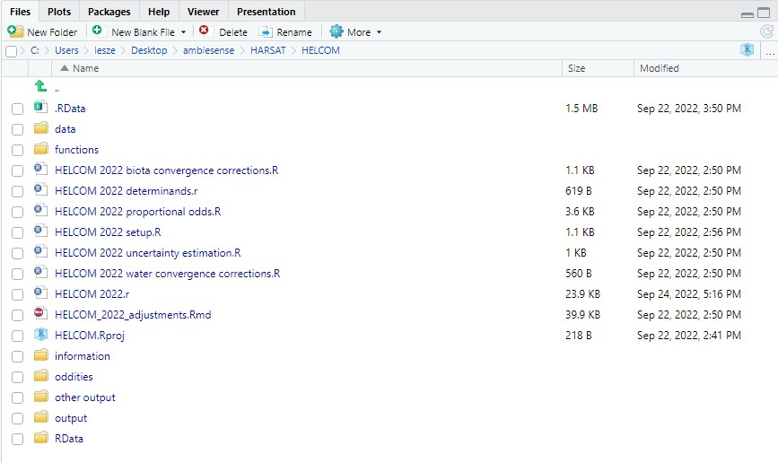

Requirements:
- R programming language version 4.2.1
- RStudio Integrated Development Environment version 2022.07.1 Build 554
Additional R packages to those which come with the standard RStudio installation. They have to be installed, either using the RStudio GUI or by the command install.packages e.g. install.packages("lme4"):
- tidyverse version 2.0.0
- dplyr
- lubridate
- readr
- stringr
- tibble
- tidyr
- sf
- lme4
- mgcv
- mvtnorm
- numDeriv
- optimx
- pbapply
- parallel
- flexsurv
The following R packages need to be installed to run the HELCOM example:
- rmarkdown
- htmlwidgets
File -> New Project in RStudio to create a new project. File -> New Project -> Version Control -> GIT -> https://github.com/osparcomm/HARSAT to clone from repository.
All example datasets can be run with the same basic directory structure. The following directories should be manually created:
- data
- R
- information
- output
The example scripts currently use subfolders within the data and output folders
- data
- example_external_data
- example_HELCOM
- example_simple_OSPAR
- output
- example_external_data
- example_HELCOM
- example_simple_OSPAR
but the data and the output can go anywhere.
Running the code will create a directory called oddities where data that might not comply with reporting requirements are posted (with warnings or errors).
Installation
You can install the development version of harsat from GitHub with:
# install.packages("devtools")
devtools::install_github("osparcomm/HARSAT")Example
This is a basic example which shows you how to solve a common problem:
The following figures are a bit out of date:

Figure 1. Required Project File Structure for OSPAR dataset.

Figure 2. Required Project File Structure for HELCOM dataset.
All R functions from the GitHub code repository should be moved to R, and csv files with the reference tables should go to ‘information’. It is recommended that the R files with examples, and the data and output directories should be in the same (project) directory e.g. HARSAT HARSAT HARSAT2022.r although one can adjust that with the path argument to ctsm_read_data and ctsm.summary.table. The ‘functions’ and ‘information’ directories can be anywhere (although it is recommended that they got to the same directory), with the function_path variable (at the top of OSPAR 2022.r) pointing to the former. Data required for OSPAR:

Figure 3. OSPAR data.
Data required for HELCOM:

Figure 4. HELCOM data.
HELCOM dataset requires additional R files to work, and different reference tables for ‘assessment criteria biota.csv’ and ‘assessment criteria sediment.csv’. HELCOM also requires different information functions from the repository with a different version that has HELCOM specific functions (‘information functions v2_68.r’).

Figure 5. Additional R files required for HELCOM dataset.